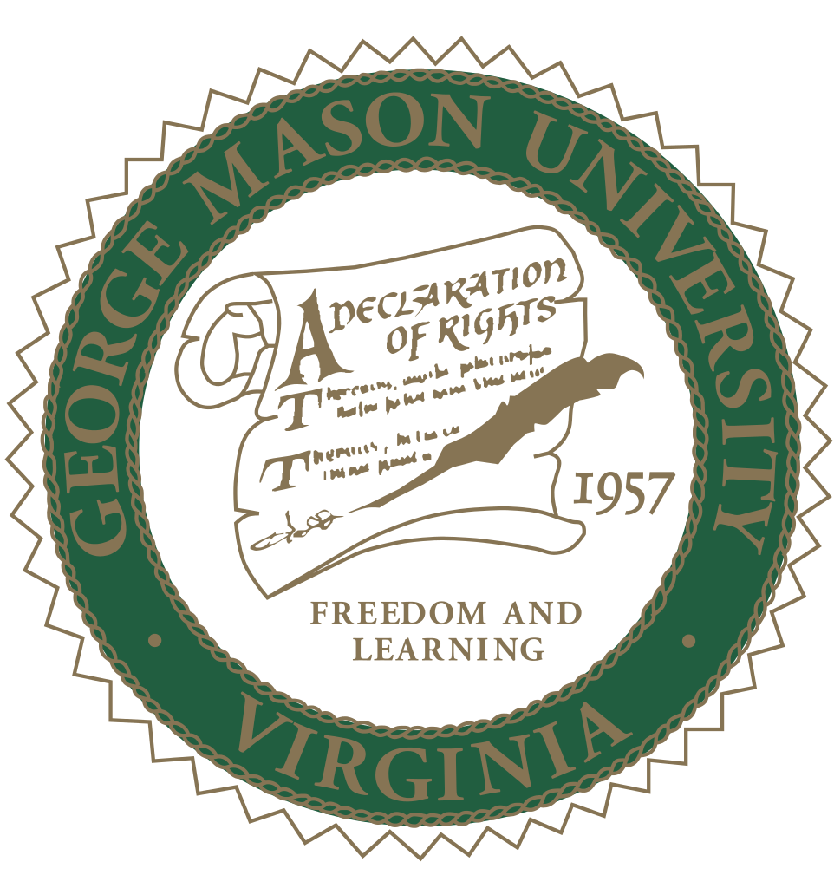

Department of Computer Science
Welcome to the Department of Computer Science.
The department offers BS, MS, and PhD programs in Computer Science;
MS programs in Software Engineering, Information Systems, and Information Security and Assurance;
and a BS program in Applied Computer Science with various concentrations.
The department also offers concentrations in the inter-disciplinary MS in Data Analytics Engineering and the PhD in Information Technology offered by the Volgenau School of Engineering.
Degrees Offered at Masters Level
- Computer Science, MS
- Artificial Intelligence and Databases
- Programming Languages and Software Engineering
- Systems and Networks
- Theoretical Computer Science
- Visual Computing
- Information Security and Assurance, MS
- Concentration in Applied Cyber Security (ACBS)
- Concentration in Network and System Security (NSS)
- Information Systems, MS
- Database Systems
- Principles and Practices of Communication Networks
- Information Systems Analysis and Design
- Information Security Theory and Practice
- Software Engineering, MS
- Object-Oriented Software Specification and Construction
- Software Modeling and Architectural Design
- Distributed Software Engineering
- Software Testing
Click here to fill out survey form

Ajay Adithya Rajagopal G01004696